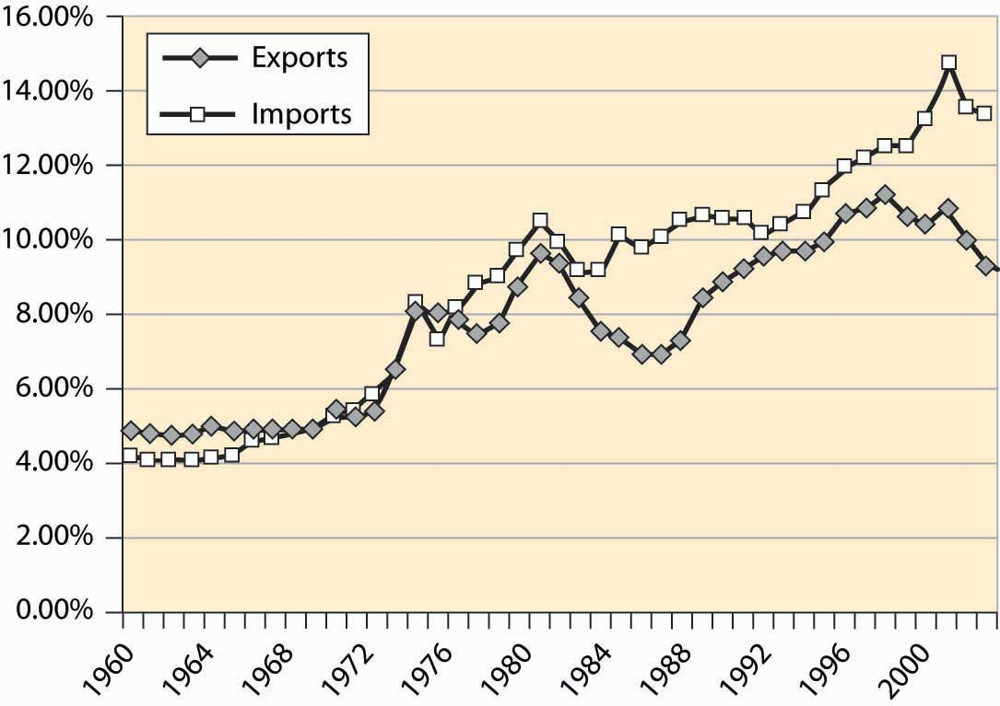
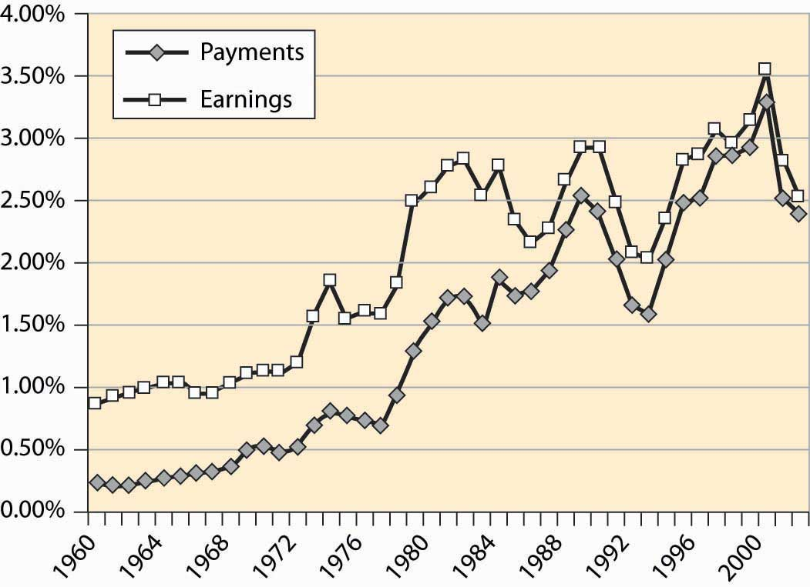

The United States is a major trading nation. Figure 4.50 "Total imports and exports as a proportion of GDP" represents total U.S. imports and exports, including foreign investments and earnings (e.g., earnings from U.S.-owned foreign assets). As is clear from this figure, the net trade surplus ended in the 1970s, and the United States now runs substantial trade deficits, around 4% of the GDP. In addition, trade is increasingly important in the economy.
Figure 4.50 Total imports and exports as a proportion of GDP

As already stated, Figure 4.50 "Total imports and exports as a proportion of GDP" includes investments and earnings. When we think of trade, we tend to think of goods traded—American soybeans, movies and computers sold abroad, as well as automobiles, toys, shoes, and wine purchased from foreign countries. Figure 4.51 "U.S. trade in goods and services" shows the total trade in goods and services, as a percentage of U.S. GDP. These figures are surprisingly similar, which show that investments and earnings from investment are roughly balanced—the United States invests abroad to a similar extent as foreigners invest in the United States.
Figure 4.51 U.S. trade in goods and services
Figure 4.52 "Income and payments (% GDP)" shows the earnings on U.S. assets abroad and the payments from U.S.-based assets owned by foreigners. These forms of exchange are known as capital accountsEarnings on foreign assets, and the payments from U.S.-based assets owned by foreigners.. These accounts are roughly in balance, while the United States used to earn about 1% of GDP from its ownership of foreign assets.
Figure 4.52 Income and payments (% GDP)
Table 4.2 Top U.S. trading partners and trade volumes ($ billions)
| Rank | Country | Exports Year-to-Date | Imports Year-to-Date | Total | Percent |
|---|---|---|---|---|---|
| All Countries | 533.6 | 946.6 | 1,480.2 | 100.0% | |
| Top 15 Countries | 400.7 | 715.4 | 1,116.2 | 75.4% | |
| 1 | Canada | 123.1 | 167.8 | 290.9 | 19.7% |
| 2 | Mexico | 71.8 | 101.3 | 173.1 | 11.7% |
| 3 | China | 22.7 | 121.5 | 144.2 | 9.7% |
| 4 | Japan | 36.0 | 85.1 | 121.0 | 8.2% |
| 5 | Germany | 20.4 | 50.3 | 70.8 | 4.8% |
| 6 | United Kingdom | 23.9 | 30.3 | 54.2 | 3.7% |
| 7 | Korea, South | 17.5 | 29.6 | 47.1 | 3.2% |
| 8 | Taiwan | 14.0 | 22.6 | 36.5 | 2.5% |
| 9 | France | 13.4 | 20.0 | 33.4 | 2.3% |
| 10 | Italy | 6.9 | 18.6 | 25.5 | 1.7% |
| 11 | Malaysia | 7.2 | 18.0 | 25.2 | 1.7% |
| 12 | Ireland | 5.2 | 19.3 | 24.5 | 1.7% |
| 13 | Singapore | 13.6 | 10.1 | 23.7 | 1.6% |
| 14 | Netherlands | 15.7 | 7.9 | 23.6 | 1.6% |
| 15 | Brazil | 9.3 | 13.2 | 22.5 | 1.5% |
Who does the United States trade with? Table 4.2 "Top U.S. trading partners and trade volumes ($ billions)" details the top 15 trading partners and the share of trade. The United States and Canada remain the top trading countries of all pairs of countries. Trade with Mexico has grown substantially since the enactment of the 1994 North American Free Trade Act (NAFTA), which extended the earlier U.S.–Canada agreement to include Mexico, and Mexico is the second largest trading partner of the United States. Together, the top 15 account for three quarters of U.S. foreign trade.